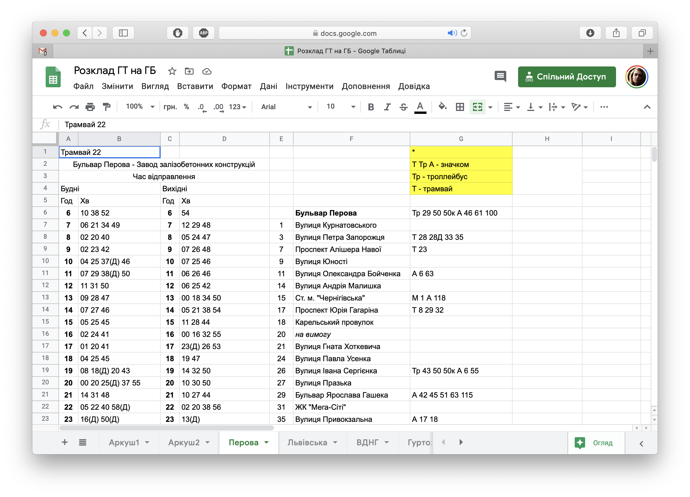
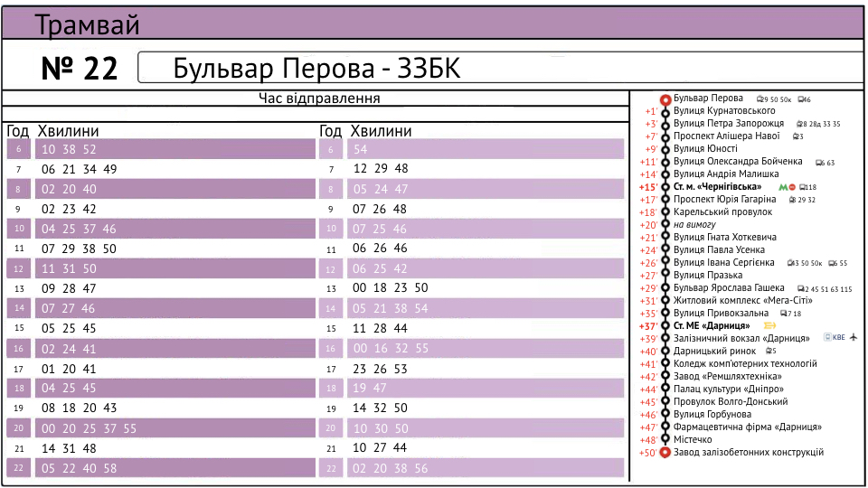

Що зробили для Києва
Активіст Тимофій Нагорний зібрав дані для 20 зупинок різних маршрутів і створив свій прототип розкладу. Час для розкладів скопіювали із сайту Easyway, бо вони більш-менш точно рахують розклад руху транспорту з урахуванням gps-даних.


Окреслили для себе, що для простоти розклад має вміститись на стандартний формат А4. Так простіше друкувати навіть у себе вдома на принтерах і не замовляти друк окремо. Потім окреслили типи даних, які мають бути на розкладі:
- тип транспорту: використали наші піктограми, розміщені у відкритому доступі;
- номер маршруту;
- позначки нічних маршрутів;
- назва маршруту: за можливості скоротили назви, використали піктограми для станцій метро, вокзалів та аеропортів;
- розклад у будні та вихідні;
- перелік зупинок на маршруті: поточна зупинка виділена, для довгих маршрутів пропущені не такі значущі зупинки та вказані лише основні, які дозволяють зорієнтуватись у районах (станції метро, проспекти, площі, тощо);
- час руху між зупинками: дозволяє планувати, за скільки часу можна дістатись необхідної зупинки;
- додатково позначили пересадки на інший транспорт: оскільки в Києві немає загальних схем транспорту, то так можна отримати більше користі від розкладів;
- виділення основних зупинок із пересадочними вузлами;
- відправлення рейсів, які прямують у депо й не їдуть до кінця маршруту.